Mobile accessibility
iOS accessibility features in depth, Android's equivalents, and the tools each platform gives you to test with.

iOS accessibility features
iOS builds a whole set of assistive tools directly into the system, under Settings > Accessibility. They're not extras bolted on afterward, they're there so people can personalise how they use their device.
Vision
- VoiceOver: speaks what's on screen, like a narrator for whatever you tap or swipe over.
- Zoom: a system-wide magnifier for any part of the screen.
- Magnifier: uses the camera to zoom in on real-world text.
- Display & Text Size: contrast, transparency, colour filters, bold or larger text.
- Motion settings: reduces animation that can cause dizziness.
Hearing
- Sound Recognition: listens for a baby crying, a doorbell, a dog barking.
- Hearing Devices: deep hearing-aid integration, adjustable from the phone.
- Live Listen: AirPods or hearing aids become a portable mic.
- Mono Audio & Balance: evens out sound for uneven hearing.
Speech
- Live Speech: type a phrase to be spoken aloud.
- Personal Voice: a synthesised version of the user's own voice.
- Speech Controller: on-screen playback of selected text, with speed and voice control.
Physical & motor
- AssistiveTouch: an on-screen menu standing in for physical buttons.
- Switch Control: operate the device with external switches.
- Voice Control: full navigation by voice command.
- Back Tap: custom actions from tapping the back of the phone.
- Touch Accommodations: adjusts how touch is registered.
How these map to POUR
VoiceOver is Perceivable and Operable. Dynamic Type is Perceivable. Reduce Motion is Understandable. AssistiveTouch is Operable. Native tools, same four principles.
Android accessibility features
Android's equivalent tools live under Settings > Accessibility, organised similarly to iOS but with their own naming and defaults.
Vision
- TalkBack: Android's screen reader, the equivalent of VoiceOver.
- Magnification: zooms into any part of the screen with a gesture.
- Select to Speak: tap an item and have it read aloud.
- Font size & display size: scales text and UI system-wide.
- Colour correction & high contrast text: adjusts for colour vision differences.
Hearing
- Live Caption: auto-captions media playing on the device.
- Live Transcribe: real-time speech-to-text for conversations.
- Sound notifications: alerts for doorbells, alarms, and similar sounds.
- Hearing aid support: direct streaming to compatible hearing aids.
Speech
- Voice Access: control the whole device by voice command.
- Voice typing: dictate text into any field.
Physical & motor
- Switch Access: navigate and select using one or more switches.
- Accessibility Menu: a large on-screen menu for common actions.
- Timing controls: extends or removes time limits on interactions.
Platform tools
Testing on-device, with the platform's own screen reader turned on, catches far more than a visual review ever will.
iOS
- VoiceOver: turn it on and try to complete a real task blind.
- Accessibility Inspector: in Xcode, audits a running app for common issues.
- Voice Control & Switch Control: for motor-access testing.
Android
- TalkBack: the direct equivalent, same approach as VoiceOver testing.
- Accessibility Scanner: a standalone app that flags issues directly on-device.
- Layout Inspector: in Android Studio, for structural issues.
Touch targets, side by side
Neither is a suggestion, both are treated as a floor for real usability, not just a guideline to round down from.